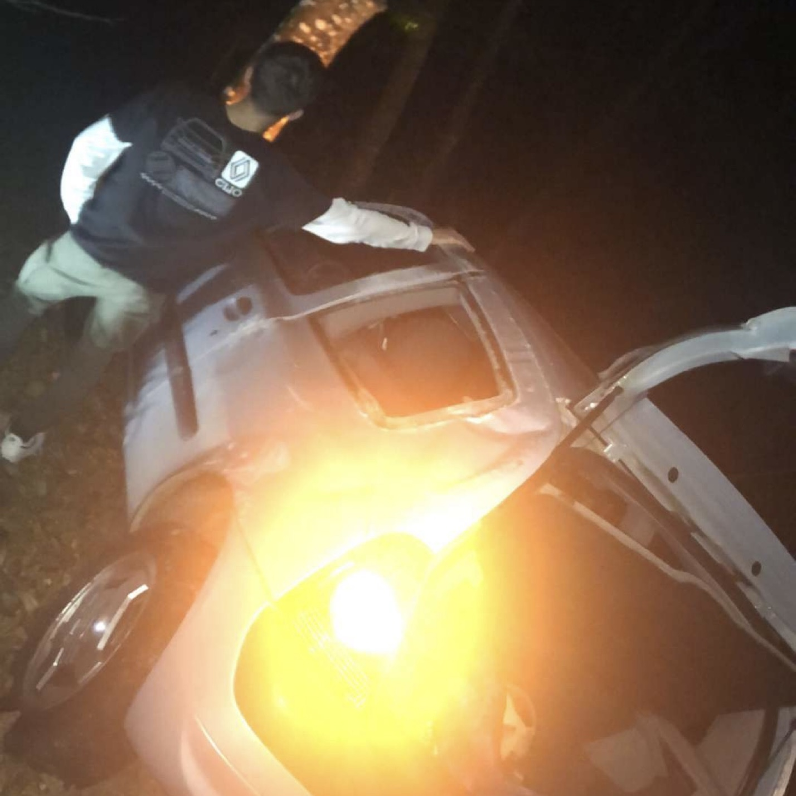

Local Car Crew
La marque de vêtements : "Century Project" est la première étape d'un projet bien plus grand qui regroupe 7 adeptes d'automobile.
Ce collectif porte un nom : "Century Project". D'une simple idée lancée au hasard, est né un objectif : créer un écosystème complet autour du domaine automobile.
La mise en place de site internet n'est donc que la première étape vers l'accomplissement de ce rêve. Et chaque achat réalisé sur le site va permettre à ce groupement de poser une nouvelle pierre et d'accéder à une prochaine étape.
En achetant chez Century Project, vous vous procurez, en plus d'un nouvel élément unique pour votre garde-robe, un fragment de l'histoire de Century Project. Car c'est ce que représente pour nous chacun des vêtements et accessoires que nous avons décidé de mettre en ligne sur ce site.
Par ailleurs, nous accordons une valeur forte à chacun de nos produits, et pour cela, nous avons fait le choix de sélectionner des matières premières de qualité.
Ainsi, nos fournisseurs ont reçu 7 certifications :
- 2 Certifications Oeko-Tex qui sont chacune des standards Mondiaux concertants les substances néfastes aux contacts des êtres vivants.
- Les certifications OCS Blended et OCS-100, la première authentifie que les matières premières sont composées de cotons biologiques et de coton/polyester recyclés, là où la seconde atteste que les matériaux sont faits à 100 % de coton bio.
- La certification GOTS qui a constaté que chaque produit est fait avec au minimum 85 % de coton.
- La certification Global Recycled Standard qui vient garantir que chaque matière première recyclé l'est bien.
- La certification Peta - Approved Vegan déclarant que chaque vêtement végan a respecté tous les tests concernant la santé et le bien-être des animaux pouvant être impliqué dans la fabrication des produits.
De la même manière que nous souhaitons que notre rêve se réalise, nous faisons en sorte d'avoir l'impact le plus léger sur la planète concernant nos vêtements.
Nous imprimons donc chacun des vêtements à la commande pour toujours avoir la quantité nécessaire et éviter les dérives qu'engendre la fast-fashion par exemple.
Encore une fois, que vous soyez devenue membre de Century Project en achetant un de nos produits ou que vous nous ayez simplement accordé du temps en lisant ce document, nous souhaitons vous remerciez.
Vos Pilotes
Pierre
"Jai serré la main à Paul Walker"
Alexis
"Les Hondas c'est avant tout des tondeuses"